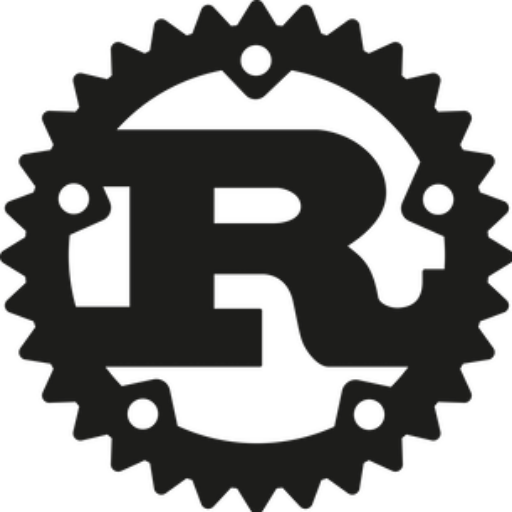

Obolus · Google Cloud × Solana
AI는 웹을 검색합니다.Obolus는 사람의 실제 경험을검색합니다.
공개 웹에 없는 인간 근거를 찾고, 필요한 원문만 열어 본 뒤, 사용한 사람에게 자동 정산하는 검색·결제 인프라입니다.
공개 웹에 없는 인간 근거를 찾고, 필요한 원문만 열어 본 뒤, 사용한 사람에게 자동 정산하는 검색·결제 인프라입니다.
시장은 계속 커지고 있습니다. Simile 같은 신생 기업까지 실제 인터뷰와 행동 데이터를 AI 시뮬레이션의 핵심 자산으로 삼습니다.
가입 전환·신뢰·이탈 이유를 상품마다 다시 조사
가격·메뉴·패키지 반응을 출시 전에 반복 검증
기능·온보딩·UX를 A/B 테스트와 인터뷰로 확인
A/B 테스트·설문·인터뷰가 새 프로젝트마다 처음부터 시작됩니다.
누가·언제·어떤 맥락에서 답했는지 남지 않아 다음 질문에 다시 쓸 수 없습니다.
구매자는 중복 조사비를 줄이고, 기여자는 답이 채택·재사용될 때마다 정산받습니다.
Where the money is already going
저장된 답변의 주제·시점·동의 범위·가격을 먼저 확인합니다.
예: 5명 모집 · 답변 1건당 0.50 USDC · 총 2.50 USDC 리워드 풀.
채택 금액의 목표 90%는 기여자에게, 10%는 프로토콜에 정산합니다.
원문·저자·버전·동의를 보존해 다음 질문에서 다시 찾습니다.

문서를 열 때마다 서명하지 않습니다. 처음 연결하거나 Pay.sh 지갑에 USDC를 더 넣을 때만 사용자가 승인합니다.
요청마다 새 지갑을 만드는 것이 아니라, 계정에 연결된 하나의 서비스 지갑에 사용할 금액을 보관합니다.
예: 10 USDC 충전 · 문서당 최대 0.50 USDC · 30일. x402는 이 범위 안에서만 자동으로 결제합니다.
사용자는 SOL을 준비하지 않습니다. 문서·수취인·USDC 금액·트랜잭션 서명과 finality를 다시 확인할 수 있습니다.
사용자가 정한 선불 한도: Pay.sh 개인 지갑의 잔액·기간·문서당 금액을 넘는 요청은 Rust가 실행 전에 거부합니다.

firsthand · 거주 6년 · consent v3
independent corroboration · 거주 3년
sponsored · authority 0
2 independent authors · outcome verified
contextualizes · positive weight .35
score = relevance .60 + coverage .12 + authority .13 + trust .10 + freshness .05
웹과 에이전트가 같은 경로를 사용합니다.

대상·필터·limit과 다음 도구를 선택합니다.
Vertex AI · Gemini 2.5 Flash
동의·가격·예산·중복·상태 전이를 검사합니다.
capability · idempotency후보를 좁히고 질문별 PageRank로 근거를 고릅니다.
hybrid retrieval · 40 iterationsx402 quote와 KMS 서명으로 열린 문서만 결제합니다.
Pay.sh · Solana finality원문·버전·금액·거래를 다시 확인합니다.
대상·기간·카테고리·필터를 읽고 검색, 추가 조사, 무료 답변 중 다음 도구와 필요한 문서 수를 제안합니다. 출력은 허용된 schema로 제한되며 개인키·수취인·가격·transaction bytes에는 접근하지 못합니다.
낮은 지연과 메모리 안전성, 같은 입력에 같은 결정을 내리는 결정적 정책 코어가 필요해 Rust를 사용했습니다. 동의 범위·예산·중복·수취인·mint·금액·PageRank 입력·finality를 실행 직전에 재검증합니다.
같은 소비자 결정을 반복 검증하는 팀은 새 설문을 만들기 전에 기존 개인 DB를 먼저 조회합니다. 부족한 답만 모집하고, 채택된 답은 다시 검색 자산이 됩니다.

grep의 정확한 키워드나 벡터 임베딩은 후보를 찾는 첫 단계입니다. 그것만으로는 사람의 맥락·상충 경험·시간에 따른 변화까지 설명하지 못합니다.
독립 교차 확인과 outcome으로 권위를 얻은 개인 DB만, 동의된 범위 안에서 질문에 답하는 제한된 페르소나가 됩니다.
“이 사람이라면 어떻게 생각할까”를 물을 수 있지만, 답은 생성문으로 끝나지 않습니다. 어떤 원문과 추상화가 답을 만들었는지 함께 제시합니다.
소유권만 증명하며 private key는 서버에 주지 않습니다.
기간·수취인·승인 한도 밖 요청을 차단합니다.
잔액이 부족해 새 자금이 필요할 때만 서명합니다.
문서·owner·hash·mint·atomic amount를 고정합니다.
고정 service wallet을 쓰며 요청마다 새 지갑을 만들지 않습니다.
facilitator가 gas를 부담하고 구매자는 evidence 가격만 냅니다.
recipient ATA·mint·amount·state transition을 재검증합니다.
검증된 Devnet USDC transfer만 제출합니다.
두 RPC가 합의하지 않으면 문서를 열지 않습니다.
idempotency fence와 canonical invoice를 남깁니다.
관련성·독립 저자·예산 조건을 만족하는 근거가 충분합니다.
일부 근거가 있으나 cohort 또는 사례 수가 부족합니다.
질문에 맞는 유료 근거를 아직 찾지 못했습니다.
| State | Allowed default | Always revalidated | Forbidden |
|---|---|---|---|
| HIT | propose selected bundle | document version · author diversity · total | 새 가격·수취인 생성 |
| PARTIAL | existing evidence + missing cohort | coverage gap · budget · target | 전체 설문 재모집 |
| MISS | free baseline / stop | 실제 candidate count = 0 | 자동 funded call |
문서의 인기도보다 질문과의 관련성, 동의 범위, 잠금 상태와 예산을 먼저 확인합니다. 관련성 기준을 넘지 못한 문서는 권위가 높아도 후보가 되지 않습니다.
같은 사람의 반복 문서는 하나의 묶음으로 정리하고, 다른 사람의 교차 확인이나 실제 결과로 검증된 문서에는 더 많은 권위를 전달합니다.
PageRank를 40회 반복해 이 질문과 가까우면서도 독립적인 근거를 찾습니다. 그래서 전체적으로 인기 있는 문서가 아니라, 지금 질문에 가장 믿을 만한 문서가 먼저 나옵니다.
모든 문서는 relevance gate를 먼저 통과해야 합니다.
중복 문서를 하나의 bundle로 묶어 자기 인용 효과를 제거합니다.
서로 다른 사람의 근거와 검증된 실제 결과가 authority를 전달합니다.
새 문서라는 이유만으로 오래된 검증 근거를 밀어내지 않습니다.
새 답변은 원문·시점·동의와 함께 DB 맨 위에 쌓입니다.
“평일 19시 전에는 대기가 짧다”는 공통 패턴을 찾습니다.
오래된 관측 여러 건은 다시 찾기 쉬운 하나의 지식으로 묶입니다.
압축된 문장을 눌러 어떤 답변에서 나왔는지 다시 내려갑니다.
최근의 반대 경험은 위에 놓여 오래된 패턴을 바로 교정합니다.
질문에는 둘을 함께 보여주고 시점 차이까지 설명합니다.
새로 들어온 경험은 요약하지 않고 원문 그대로 우선 노출합니다. 그래서 최근 상황이 바뀌었을 때 오래된 평균이 새 정보를 덮지 않습니다.
소셜 월드모델의 memory stream처럼 관측을 계속 append하고, 반복되는 경험을 reflection으로 상위 개념에 올립니다. 단, 원문 pointer를 유지해 언제든 근거까지 역추적합니다.
같은 소유자의 반복 문서를 한 bundle에서 제거하고, verified outcome과 독립 corroboration만 권위를 올립니다.
서로 주고받은 organic edge는 정상 weight의 20%만 인정하고, source lineage·contradiction·dispute는 감사 신호로 보존합니다.
지갑·기기·문체·시간 sybil cluster, reciprocal community 이상치, rank snapshot, 철회 시 descendant invalidation을 검증합니다.

API · x402 gateway · Agent orchestrator · Pay service. 독립 revision/service account/repository.
quote·capability·consent·memory·agent run·idempotency. backup/PITR/ENCRYPTED_ONLY.
settlement queue · max 20/s · concurrency 20 · bounded retry 7 days.
non-exportable Ed25519 signer · Gemini 2.5 Flash planner/decider.
동의 version·purpose·TTL·민감도·철회 상태. public chain에는 개인 원문을 쓰지 않습니다.
pseudonymous handle·document version/hash·abstraction pointers·authority. 검색 전에 consent filter를 적용합니다.
USDC transaction·finality·canonical message hash. 회계 감사에 필요 없는 개인정보는 배제합니다.
Phantom seed/private key · 평문 장기 signing key · 불필요한 SNS archive · 결제와 무관한 wallet tracking metadata.
L0 locked/void → descendant reflection 탐색 → 남은 source로 재계산 → 부족하면 상위 통찰 hidden → index/PageRank 갱신 → 영수증은 hash 중심 최소 보존.
LinkedIn·X·Instagram의 활동 기록이나 Mem0·Obsidian의 개인 기억을 가져오면 시작 데이터는 풍부해집니다. 하지만 데이터를 가져오는 순간, 검색보다 더 큰 비용과 보안 책임이 생겼습니다.
질문 한 건의 작은 결제 모델에서는 SNS API 구독료와 호출 제한이 제품 경제성을 먼저 압박합니다.
scope·만료·철회·삭제 요청과 계정 탈취 대응까지 Obolus가 책임져야 합니다.
Mem0 API key나 Obsidian vault를 가져오면 민감한 원문과 권한 경계가 함께 이동합니다.
외부 연동은 사용자가 직접 보관하고 선택적으로 내보내는 local-first 방식과 토큰 격리를 더 검증한 뒤 도입합니다.


경험과 관심사를 빠르게 채울 수 있지만, API 가격·쿼터·재배포 권리와 장기 OAuth 토큰 관리가 필요합니다.
결론 · 현재 보류 MEM0
MEM0에이전트 기억을 바로 가져올 수 있지만, API key와 개인 원문의 저장 위치·삭제 책임을 Obolus가 다시 검증해야 합니다.
검토 · 토큰 격리 필요 OBSIDIAN
OBSIDIAN로컬 문서는 풍부하지만 vault 전체를 서버로 올리는 방식은 과도합니다. 미리보기·선택·삭제가 가능한 local-first import가 필요합니다.
검토 · 선택적 import 필요질문·검색·quote·open 요청
인증·동의·문서·질문 요청
Cloud RunGemini 도구 계획과 실행 추적
Cloud Runquote·capability·402·finality
Cloud RunKMS 서명·USDC 정산·영수증
Cloud Run모델은 판단 후보를 만들고, 금액·동의·권한·상태 전이는 Rust 상태 머신과 데이터베이스 제약이 확정합니다.
USDC · 2 RPC finalized 합의 · canonical receipt